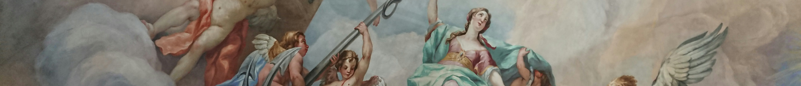

Емілі
Дікінсон
Видатна американська поетеса. Майстриня екзистенційної та лесбійської лірики,нині одна з найважливіших постатей американської та світової поезії.
Біографія

Моменти, що формують
Емілі Дікісон народилася 10 грудня 1830 року в Амгерсті (штат Массачусетс). В одному з листів дівчина писала про свою родину: “Я маю брата і сестру. Мою матір не цікавить література, а батько надто зайнятий, щоб помічати, чим ми займаємося”.
Емілі та її молодша сестра Лавінія дуже любили батька, Едварда, але їхня мати часто хворіла і страждала на депресію. Про неї Емілі писала: “У мене ніколи не було матері. Я думаю, що мати – це та людина, до якої ти йдеш, коли тяжко”.
Емілі відвідувала початкову школу на Плезент-Стріт у Емгерсті. У 1840 році разом з сестрою навчалась в Академії Емгерста протягом 7 років. Вона завжди відрізнялась від ровесниць своєю вразливістю та емоційністю. Смерть вчителя Леонарда Гамфрі, літературного наставника Бенджаміна Ньютона та двоюрідної сестри Софії стали для Емілі Дікінсон великими особистими трагедіями. Труднощі життя, як це часто бувало у літературі, стали для Дікінсон великим імпульсом до створення її віршів.
У 1852
У 1855
Емілі Дікінсон певний час цікавилася релігією і регулярно відвідувала церкву, хоча вона була не хрещеною. Її сім'я була релігійною, але у 1852 році Емілі припинила ходити до церкви, не висловлюючи чіткої позиції щодо власних релігійних поглядів.
Навесні 1855 року разом з матір'ю та сестрою Дікінсон здійснила одну з найдальших своїх подорожей до Вашингтона, а потім ще два тижні була в Філадельфії. Там поетеса познайомилася одним з її найближчих друзів, священиком Чарльзом Водсвортом, попри те, що вони бачилися лише двічі, аж до своєї смерті в 1882 році мав на неї серйозний вплив.
Ще однією важливою музою для поетеси стала Сюзан Гілберт– дружина її брата Остіна.

Їхній шлюб приніс у родину нову «сестру», з якою Емілі відчувала особливу близькість. Протягом багатьох років поетеса надсилала понад 270 віршів, у яких ділилася найособистішими думками та почуттями. З часом стосунки між ними згасли. Сьюзен поступово віддалилася від Емілі через соціальні та сімейні обов’язки.
Цей холод, а також роман Остіна з Мейбл Луміс Тодд ще більше ускладнили їхні стосунки. Проте навіть після цього емоційний зв’язок між Емілі та Сью зберігся: їхні листи та обмін думками продовжувалися до останніх років життя поетеси, а саму Сьюзен вона вважала своїм найвідданішим читачем і поціновувачем.
1886 рік
Емілі Дікінсон померла в Амгерсті в 1886 році. Після її смерті члени її родини знайшли її власноруч зшиті книги, або «збірники». Ці збірники містили близько 1800 віршів.
“They shut me up in Prose”
“They shut me up in Prose”,— в цьому вірші Емілі Дікінсон розповідає про власний досвід самовираження та порушує теми “ув’язнення” свого я та соціальних обмежень.
Через метафору маленької дівчинки, замкненої в шафі, від якої очікують "мовчання" та покірності, бо їй судилося бути тихою, слухняною, чемною і красивою, Дікінсон показує тиск суспільних норм, які намагаються обмежити її свободу.
Поетеса критикує ці обмеження. У часи, коли Емілі писала цей вірш, вважалося, що поезія вимагає високого рівня інтелекту, начебто доступного лише чоловікам.
Тому жінки змушені були писати лише прозу, а поезія залишалася полем чоловіків.
Порівняння з птахом, якого спіймали «за зраду», підкреслює абсурдність придушення чиїхось бажань та імпульсів, що є настільки ж несправедливе, як ув'язнення птаха лише за те, що він літає.
“After great pain, a formal feeling comes “
“After great pain, a formal feeling comes” — в цьому вірші Емілі Дікінсон розповідає про втрату та наслідки, що виникають після втрати близької людини.
Вірш можна трактувати як алегорію переживання руйнівного чи травматичного досвіду, а також як дослідження психологічних наслідків цього болю.
Емілі описує стан, коли людина відчуває емоційну втрату й відчуженість від інших. Образи “нервів, що сидять урочисто, як гробниці”, і «застиглого серця», яке не шукає відповідей, відображають внутрішню ізоляцію, що наступає після серйозного стресу або втрати.
Спершу – холод,заціпенніня, а потім – забуття,коли все,що було стає туманним і врешті-решт вже не завдає такого болю.